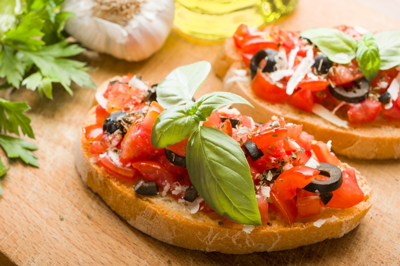
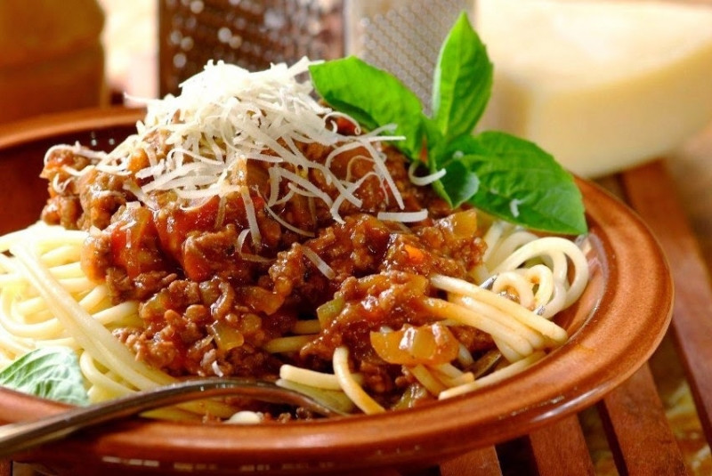

MENU
Ở EL GAUCHO NỔI TIẾNG VỚI THỰC ĐỢN MÓN Ý
Bruschetta - Ý
Được xem là món ăn nhẹ, món khai vị nổi tiếng ở nước Ý, Bruschetta bao gồm bánh mì nướng, được biến tấu ăn kèm với nhiều loại thực phẩm khác nhau. Trong số đó, cà chua được sử dụng nhiều và phổ biến nhất. Người làm Bruschetta sẽ chọn những quả cà chua tươi ngon nhất, băm nhuyễn hoặc xắt lát mỏng. Họ đặt cà chua lên lát bánh mì nướng đã cắt khoanh và cho thêm các gia vị, phụ liệu khác như: sốt, lá húng quế, ô liu lên trên bề mặt. Điều đặc biệt hơn cả là lát bánh mì nướng đã được phết lớp tỏi lên trên và nướng vàng giòn, tạo mùi rất thơm, kích thích vị giác người dùng

